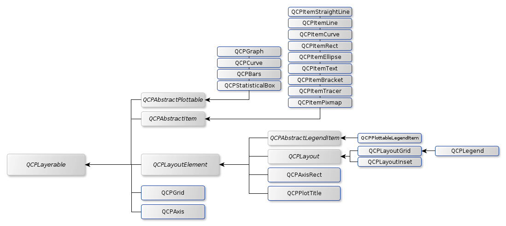

The following diagrams may help to gain a deeper understanding of the relationships between classes that make up the QCustomPlot library. The diagrams are not exhaustive, so only the classes deemed most relevant are shown.
Class Relationship Diagram

Overview of most important classes and their relations
Class Inheritance Tree

Inheritance tree of most important classes